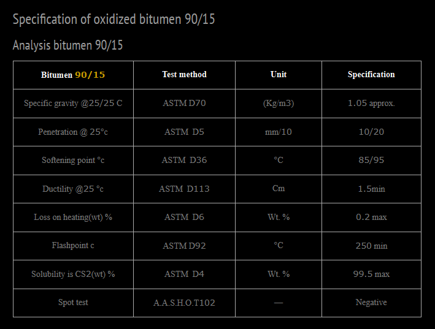

Description of Oxidized Bitumen 90/15 – Iran Bitumen Supply │ IBITMCO
Oxidized Bitumen 90/15 is produced through a controlled air‑blowing process in which a mixture of Vacuum Bottom (VB) and Vacuum Slops (VS) feedstock is exposed to high temperatures between 200°C and 300°C under specific pressure conditions. During this reaction, hydrogen atoms in the bitumen molecules oxidize as they bond with oxygen from the air, creating a polymerized structure with a higher softening point and lower penetration value than the original bitumen. The resulting product, Bitumen 90/15, has a softening point of 90°C and a penetration value of 15 dmm, making it a durable and stable oxidized bitumen suitable for demanding industrial and construction applications. Oxidized bitumen 90/15 is known for its excellent thermal stability, flexibility at low temperatures, resistance to sagging at high temperatures, and strong adhesion. These characteristics allow it to perform reliably across a wide range of climatic conditions and construction environments. As a specially formulated bituminous material, it is widely used in applications where long‑lasting waterproofing, insulation, and bonding strength are essential. At Iran Bitumen Supply │ IBITMCO, our Oxidized Bitumen 90/15 is produced through a precise oxidation process using high‑quality feedstock to ensure consistent performance. Each batch is tested and verified to meet ASTM standards, and international inspectors oversee loading and quality control procedures to guarantee that customers receive material that meets the required specifications.
Uses of Oxidized Bitumen 90/15
Oxidized Bitumen 90/15 is used extensively across industrial, construction, and civil engineering sectors. It plays a key role in the production of paints, varnishes, lacquers, adhesives, and coatings, and is widely applied in paper and pulp processing, textile treatment, and fuel industries. In construction, it is used for road paving, crack sealing, pavement repair, roofing, waterproofing, and building insulation. Its strong adhesive and waterproofing properties make it suitable for sealing and insulating structures, producing bitumen membrane sheets, and manufacturing construction additives. The material is also used in corrosion‑resistant coatings for metal surfaces, in hydraulic structures, Portland cement pavements, and in the production of mastics, caulking compounds, and damp‑proofing materials. In the automotive industry, oxidized bitumen 90/15 is essential for vehicle undercoating, providing excellent waterproofing, dust protection, and noise reduction. It is also used as a base material for synthetic turf and in electrical laminate adhesives.
Application of Oxidized Bitumen 90/15
To achieve proper flow and viscosity, Oxidized Bitumen 90/15 must be heated to approximately twice its softening point. Before application, all surfaces must be completely dry, clean, and free from dust, loose particles, curing compounds, formwork residues, slurry, or any irregularities that may interfere with adhesion. Proper surface preparation ensures optimal bonding and long‑term performance.
Packing of Oxidized Bitumen 90/15
At Iran Bitumen Supply │ IBITMCO, Oxidized Bitumen 90/15 is available in several packaging options designed for convenience, safety, and efficient handling. It can be supplied in Kraft bags, meltable plastic bags, steel drums, or in bulk form, depending on customer requirements. Each batch is produced from penetration‑grade bitumen that is blown with hot air until the desired softening point and penetration values are achieved. The designation 90/15 reflects its softening point of 90°C and penetration of 15 dmm, and all products are manufactured in full compliance with ASTM standards.

Specification of Oxidized Bitumen 90/15